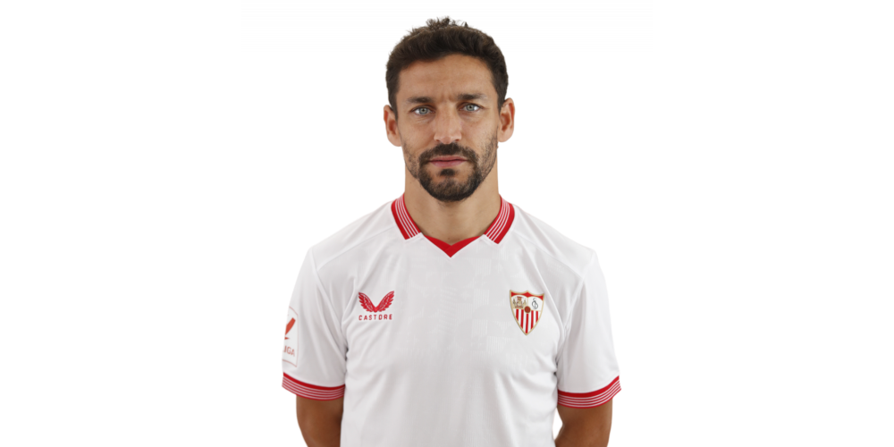

LaLiga: equipos y leyendas
Una página sobre los clubes y los jugadores que forman su historia.
LaLiga: equipos y leyendas
Una página sobre los clubes y los jugadores que forman su historia.
Leyenda del Sevilla FC



Jesús Navas González, conocido como Jesús Navas, nació en Los Palacios y Villafranca el 21 de noviembre de 1985. Formado en la cantera sevillista, convirtió la banda derecha en el escenario de una carrera excepcional, primero como extremo y después como lateral. Su velocidad, sus centros y su compromiso lo llevaron a triunfar con el Sevilla, el Manchester City y España. Al retirarse en diciembre de 2024, dejó el récord de partidos oficiales del club de Nervión.
Jesús Navas cerró su carrera con 705 partidos oficiales en el Sevilla FC.
Debutó con el Sevilla Atlético en febrero de 2003 y con el primer equipo en noviembre del mismo año, frente al Espanyol. Su consolidación coincidió con el nacimiento de una etapa histórica: participó en las Copas de la UEFA de 2006 y 2007 y en las Copas del Rey de 2007 y 2010. En 2013 se incorporó al Manchester City, donde jugó cuatro temporadas y conquistó la Premier League y dos Copas de la Liga. Aquella experiencia inglesa amplió su trayectoria antes de regresar a su ciudad.
El regreso al Sevilla en agosto de 2017 abrió una segunda etapa como capitán y referente. Reconvertido en lateral derecho, sumó las Europa League de 2020 y 2023 y terminó con 705 encuentros oficiales y dieciocho temporadas sevillistas. También construyó un palmarés extraordinario con España: ganó el Mundial de 2010, las Eurocopas de 2012 y 2024 y la Nations League de 2023. Su despedida del fútbol llegó el 22 de diciembre de 2024. El posterior homenaje en Nervión reconoció una trayectoria estrechamente unida al club y a su afición.